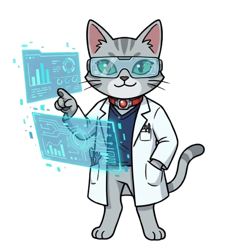
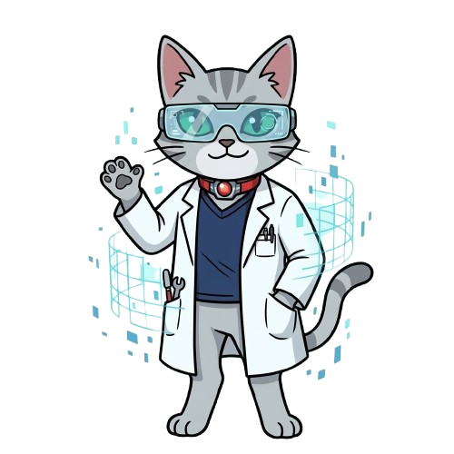
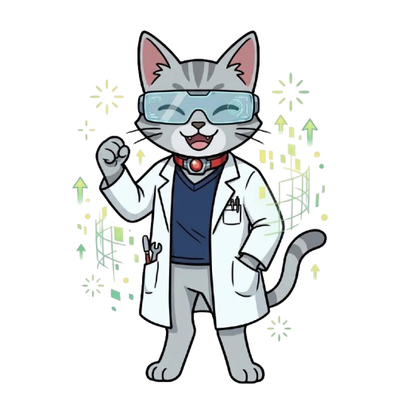

바이러스 연구소 탈출기
수석 연구원님, 보안 시스템을 해독하려면 생명 중심 원리(Central Dogma)를 이해해야 합니다.
DNA는 생명체의 모든 유전 정보를 담고 있는 원본 설계도로, 핵 안에 안전하게 보관됩니다. 단백질을 합성하기 위해서는 이 원본을 복사해 세포질로 전달할 메신저가 필요한데, 이 과정이 바로 '전사(Transcription)'입니다.
DNA의 이중 나선이 풀리며 특정 유전자의 염기 서열이 단일 가닥인 RNA로 복사됩니다. 이때 염기들은 상보적 결합 규칙을 따릅니다.
• DNA의 구아닌(G) ↔ RNA의 사이토신(C)
• DNA의 아데닌(A) ↔ RNA의 우라실(U) (※ RNA에는 티민(T)이 존재하지 않음!)

AI 두잇 (DoIt) [경고]
"병원체 유출로 B1 구역이 폐쇄되었습니다. 데이터 칩의 DNA 염기 서열을 전사하여 보안을 해제하십시오."
백신 앰플을 무균 코팅하기 위한 화학 반응입니다. 산화와 환원은 전자의 이동에 의해 항상 동시에 일어납니다.
이온화 경향(전자를 잃고 양이온이 되려는 성질)은 금속마다 다릅니다. 구리(Cu)는 은(Ag)보다 이온화 경향이 훨씬 큽니다.
따라서 무색의 질산 은($AgNO_3$) 수용액에 구리선을 넣으면,
1. 반응성이 큰 구리(Cu)는 전자를 잃고 산화되어 푸른색의 구리 이온($Cu^{2+}$)으로 녹아들어 수용액이 푸르게 변합니다.
2. 반대로 수용액 속의 은 이온($Ag^+$)은 구리가 버린 전자를 얻어 환원되며, 구리선 표면에 은(Ag)으로 석출됩니다.

AI 두잇 (DoIt)
"백신 앰플을 안전하게 밀봉해야 합니다. 화학 반응에서 전자를 뺏고 뺏기는 금속의 반응성을 계산하십시오."
다윈의 진화론에 따르면, 같은 종의 개체들 사이에서도 유전적 차이로 인해 '변이'가 존재합니다.
가혹한 약물(백신/항생제) 환경이 주어지면, 약물에 약한 개체들은 죽지만 우연히 내성 유전자를 가진 변이 개체는 살아남습니다.
살아남은 내성 병원체들이 자손을 번식하면서 결국 집단 전체가 내성을 갖게 되는 방향으로 진화하는데, 이를 환경에 의한 '자연선택'이라고 합니다. 현재 통제실 밖에서는 우리가 뿌린 백신에 적응하여 자연선택된 강력한 내성 변이 바이러스가 증식하고 있습니다.
AI 두잇 (DoIt) [분석 완료]
"수석 연구원님. 자연선택을 거친 변이 종의 처리 방안을 결재해야 합니다. 안전과 과학적 진보 중 당신의 가치관을 따르겠습니다."

AI 두잇 (DoIt) [시스템 종료]
"연구원님의 훌륭한 통찰력과 결단 덕분에 위기를 넘겼습니다. A.Q.U.A 시스템을 안전하게 종료합니다. 수고하셨습니다!"